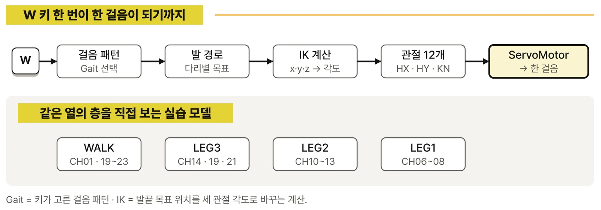
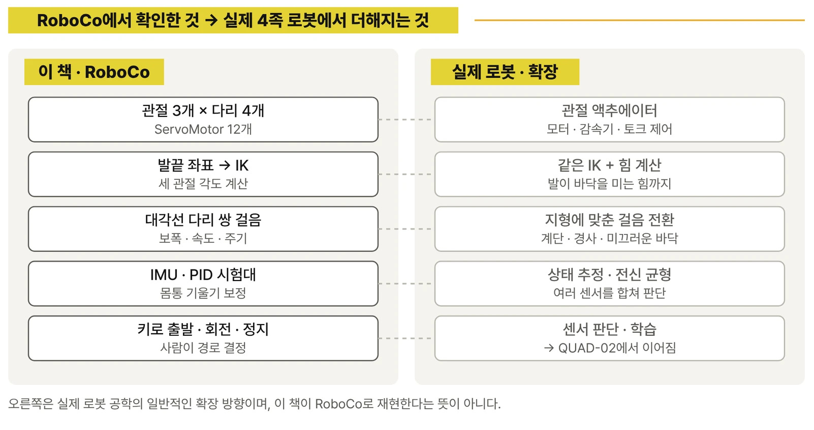
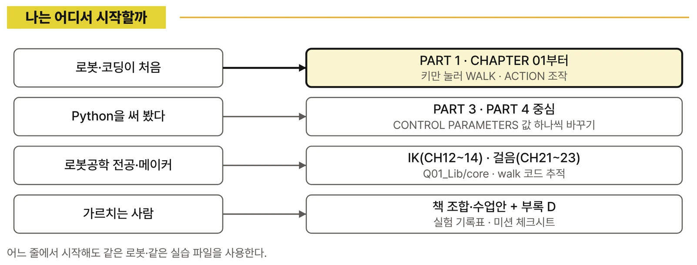
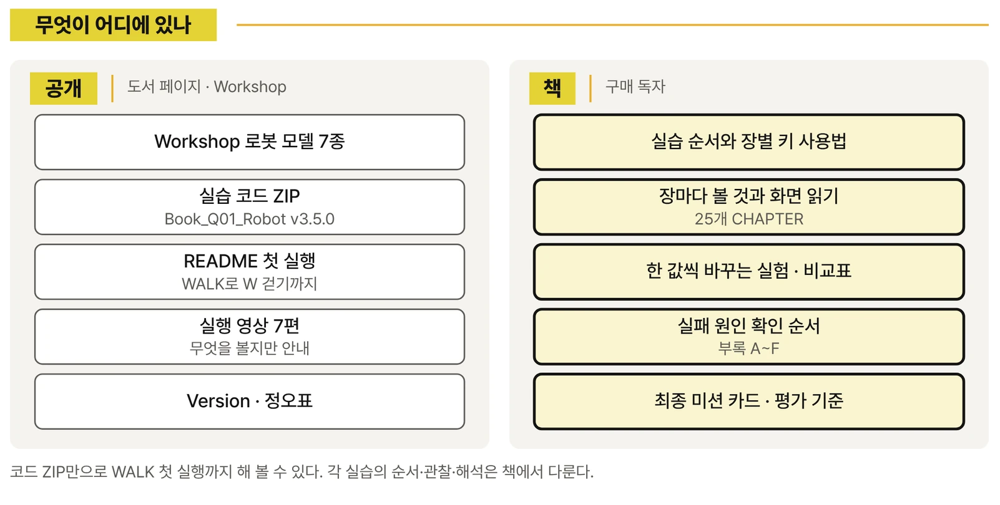
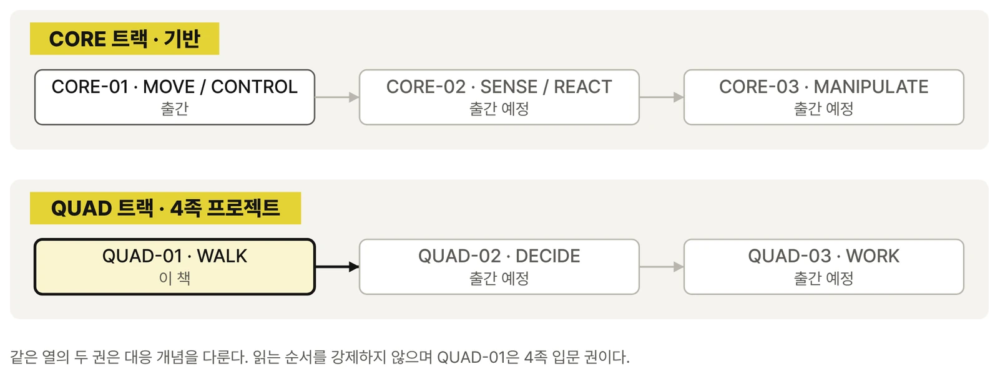

CH01 · 03 · 04 · 16 · 19~25
WALK
누르고 있는 동안 걷는 보행 모델. 전진·후진·제자리 회전·옆 걸음, 자동 모드 1·2·3
RoboCo에서 네 다리 로봇의 걸음과 자세를 바꿔 보며 이해하는 보행 원리

신간 종이책 · 전자책
피지컬 AI로 배우는 RoboCo · QUAD-01 · WALK
노란 몸통에 검은 다리 네 개. RoboCo 화면 속 4족 로봇은 W를 누르는 동안 대각선 다리를 번갈아 들며 앞으로 걷고, 손을 떼면 네 발을 바닥에 놓고 섭니다. 숫자 키를 누르면 같은 로봇이 앉아서 손을 흔들고, 기지개를 켜고, 물구나무를 섭니다.
이 책은 그 걸음을 먼저 경험한 뒤 한 층씩 거꾸로 따라갑니다. 걸음 패턴이 다리마다 발끝 목표를 정하고, IK가 그 목표를 세 관절 각도로 바꾸고, 열두 개의 ServoMotor가 실제 움직임을 만드는 과정을 확인합니다. 값 하나를 바꿔 같은 조건에서 다시 걷고, 넘어지면 어느 층부터 볼지 순서대로 좁힙니다.
로봇 키트 없이, RoboCo 가상 환경에서 조종하고 바꿔 보는 4족 로봇 실습
책 CHAPTER 01에서 처음 실행하는 WALK 모델의 실제 실행 영상입니다. 키를 누르는 동안 걷고, 방향을 바꾸고, 옆으로 걷고, 손을 떼면 멈춥니다. 이 한 걸음을 만드는 구조와 값을 25개 CHAPTER에 걸쳐 따라갑니다.
어느 발을 먼저 들고, 그 발을 어디에 내려놓고, 남은 발이 몸통을 어떻게 받칠지. 바퀴 로봇에는 없던 세 가지 질문에서 시작합니다.
보행 키 → 걸음 패턴 → 다리별 발 경로 → IK → 관절 각도 → ServoMotor. 한 걸음을 다섯 개의 층으로 나누어 읽습니다.
관절 축·회전 방향·좌우 대칭을 거치대 위의 다리 하나에서 직접 확인하고, 반대로 도는 다리를 고칩니다.
모델·시작 파일 → Port → 관절 방향 → 좌표 → IK·관절 한계 → 발 경로. 콘솔 LOG를 근거로 범위를 좁히고 한 조건만 고쳐 다시 걷습니다.

대표 로봇은 하나입니다. 다리마다 관절 3개, 모두 12개의 ServoMotor로 움직이는 4족 로봇 한 대를 바닥에 세우고, 관찰용 거치대에 매달고, 기울기 시험대 위에 올려 일곱 가지 실습 모델로 준비했습니다. 시작 파일은 모두 8개입니다(BALANCE는 로봇과 시험대에 하나씩).
누르고 있는 동안 걷는 보행 모델. 전진·후진·제자리 회전·옆 걸음, 자동 모드 1·2·3

숫자 키 하나에 몸짓 하나. 인사·앉아서 손 흔들기·스트레칭부터 물구나무서기·탭 댄스까지

거치대에 매단 로봇에서 관절 하나씩. HX·HY·KN 세 축과 Port를 화면으로 확인

발끝 목표 x·y·z를 키로 옮기면 IK가 세 관절 각도를 계산. FK로 다시 확인

네 다리를 함께. 도달 범위·관절 한계·한 다리씩 들기·대각선 쌍·세 다리 자세

네 발은 바닥에 둔 채 몸통만 앞뒤·좌우·위아래와 Roll·Pitch·Yaw로 움직이기

기울기 시험대 위에서 IMU·PID 균형 보정. 로봇과 시험대에 Microcontroller 두 개

[INPUT]·[STATE]·[JOINT] 형식의 LOG가 남습니다.QUAD 트랙의 완전 입문서입니다. 바퀴 로봇 실습 경험이 없어도 이 4족 로봇 한 대로 처음부터 시작합니다. 관절 하나 → 다리 하나 → 네 다리 → 좌표 → IK → 자세 → 걸음 패턴 순서로 제어 범위를 넓힙니다.
코드를 열지 않고 WALK의 방향 키와 ACTION의 숫자 키만 씁니다. 첫걸음, 일어서기·앉기·기지개, 여섯 방향 키와 자동 모드 1·2·3, 전진·회전·정지, 자유 조작. CH01~05
거치대 위의 다리 하나에서 3자유도와 관절 축을 확인하고, 네 다리와 열두 ServoMotor의 연결표, 좌우 대칭, 서보에서 보행까지의 제어 단계, 좌표 기준을 정리합니다. CH06~10
발 목표 위치를 바꾸고, IK가 다리 각도를 계산하게 하고, 계산값과 실제 자세를 비교하고, 닿지 않는 곳을 미리 걸러 낸 뒤 네 다리와 몸통 자세를 함께 바꿉니다. CH11~15
몸통 높이, 기울기와 회전 자세, 자세 전환 속도, 지지 다리와 움직이는 다리의 발 경로, 보폭·속도·걸음 주기를 하나씩 바꿔 비교합니다. 기울기 시험대의 IMU·PID 실습은 선택 실습입니다. CH16~20
걸음 주기와 다리 순서를 만들고, 앞뒤로 걷고, 좌우로 돌고, 넘어진 로봇을 다시 걷게 한 뒤 최종 미션을 반복 실행해 완성률을 기록합니다. CH21~25

마지막 CHAPTER에서는 처음과 같은 W·A·D·X 키로 돌아옵니다. 출발선과 목표 구역을 정한 미션 카드를 먼저 채우고, 같은 조건으로 여러 번 실행해 끝까지 걸었는지, 넘어지지 않았는지, 목표 구역에서 정지 자세를 유지했는지를 기록합니다. 그 기록을 근거로 회전 직후 흔들림 같은 문제 하나를 골라 값 하나만 바꾸고 다시 비교합니다.
책은 RoboCo 안에서 확인할 수 있는 것만 다룹니다. 여기서는 책을 덮은 뒤 이어질 질문, 곧 이 경험이 실제 4족 로봇과 어떻게 연결되는지를 정리합니다. 책을 고르기 전에 이 책이 어디까지 데려가는지 판단하는 데 쓰세요.

바퀴는 평평한 바닥에서 빠르고 효율적입니다. 그러나 계단, 턱, 자갈처럼 바닥이 끊기거나 울퉁불퉁한 곳에서는 발을 들어 다른 곳에 내려놓는 다리가 유리합니다. 그래서 4족 로봇은 시설 점검·순찰·연구 플랫폼처럼 사람이 다니는 공간을 그대로 다녀야 하는 곳에서 꾸준히 쓰임새를 넓혀 왔습니다. 대신 다리 로봇은 매 순간 어느 발로 몸을 받칠지를 정해야 하므로, 바퀴 로봇보다 제어해야 할 것이 훨씬 많습니다. 이 책이 열두 관절에서 시작하는 이유입니다.
공개 ZIP Book_Q01_Robot에는 시작 파일 8개와 저자 교육용 라이브러리 Q01_Lib(Python 파일 55개)가 들어 있습니다. 라이브러리는 책의 층 구분과 같은 순서로 폴더가 나뉘어 있습니다.
| 폴더 | 맡은 일 | 책에서 |
|---|---|---|
core/ | IK 계산, 서보 명령, Port 표, 키 입력, 콘솔 LOG, TextScreen, IMU | PART 2·3 전반 |
walk/ · auto/ | 걸음 패턴(보폭·위상 속도), 보행 키 처리, 자동 모드 1·2·3 | CH01·03·19~25 |
action/ | 숫자 키 퍼포먼스와 화면 상태 흐름 | CH02·05·18 |
leg1_joint/ · leg2_ik/ · leg3_combined/ | 관절 하나 → 발끝 좌표 → 네 다리 테스트 | CH06~14·19·21 |
body_pose/ | 몸통 x·y·z와 Roll·Pitch·Yaw 자세 | CH15~18 |
balance_test/ | IMU 필터, PID, 기울기 시험대와 통신 | CH17·20 |
코드에는 키와 기본값이 그대로 보입니다. 다만 어떤 순서로 실행하고, 무엇을 관찰하고, 어떤 값을 얼마나 바꿔 무엇과 비교하며, 결과를 어떻게 해석하는지는 코드에 없습니다. 그 부분이 이 책의 본문과 부록입니다.
센서로 장애물을 보고 스스로 걸음을 고르는 자율보행과 학습 기반 판단은 QUAD-02, 걸어가서 로봇팔로 물체를 집고 옮기는 작업은 QUAD-03에서 다룹니다. 실제 하드웨어의 배선·전원·발열·통신 지연도 다루지 않습니다. QUAD-01은 그 모든 단계가 기대는 바탕, 곧 열두 관절 명령이 한 걸음이 되는 구조에 집중합니다.
CONTROL PARAMETERS와 Q01_Lib/core·walk를 따라가며 걸음 패턴을 직접 바꿔 봅니다.
설치와 첫 실행, 25개 CHAPTER의 실습 순서·관찰 포인트·한 값 실험·비교표·실패 원인 확인 순서, 최종 미션 카드, 부록 A~F(연결표·키맵·IK 한계 기록표·실험 기록표·보행 오류 진단표·용어와 단위).
시작 파일 8개와 Q01_Lib가 든 코드 ZIP v3.5.0, Steam Workshop 로봇 모델 7종 안내를 실습 파일 페이지에서 확인값과 함께 제공합니다.
책에 담을 수 없는 움직임을 영상으로 보여 줍니다. 일곱 실습 모델의 실행 영상과 볼 포인트, 웹 전용 도전 과제, Version·정오표를 모읍니다.

| 구분 | 항목 | 설명 |
|---|---|---|
| 필수 | Steam용 RoboCo | Sandbox에서 로봇을 불러오고 Live Mode로 실행합니다. |
| 필수 | 실습 로봇 모델 7종 | Steam Workshop에서 구독합니다 — 실습 파일 페이지에서 안내 |
| 필수 | 실습 코드 ZIP | Book_Q01_Robot_release_v3.5.0_kr.zip — 내려받기 |
| 불필요 | 시스템 Python 설치 | Script는 RoboCo 안의 Python 실행 환경에서 동작합니다. |
| 선택 | 코드 편집기 | 시작 파일의 CONTROL PARAMETERS를 바꿀 때 사용합니다. |
RoboCo의 지원 OS·사양·지원 언어·가격은 구매 전에 Steam에서 최신 정보를 확인합니다. 실습을 확인한 게임 빌드와 호환 정보는 실습 파일 페이지의 검증 상태에 기록합니다.
QUAD-01은 다른 권을 먼저 읽지 않아도 시작할 수 있는 4족 트랙의 입문 권입니다. 시리즈는 기반을 넓히는 CORE 경로(MOVE → SENSE/REACT → MANIPULATE)와 4족 로봇을 확장하는 QUAD 경로(WALK → DECIDE → WORK)로 나뉘며, 여섯 권을 한 줄 순서로 읽도록 강제하지 않습니다.
| 권 | Capability | 다루는 것 | 상태 |
|---|---|---|---|
| CORE-01 | MOVE / CONTROL | 4륜 독립 구동·독립 조향 로봇의 이동 제어 | 출간 |
| CORE-02 | SENSE / REACT | 센서 입력·상태 변화·반응·피드백 | 출간 예정 |
| CORE-03 | MANIPULATE | 이동 로봇팔로 집고 옮기고 놓기 | 출간 예정 |
| QUAD-01 | WALK | 12관절 4족 로봇의 관절·발끝 좌표·IK·자세·보행 | 이 책 · 출간 |
| QUAD-02 | DECIDE | 센서·상태 기반 행동 선택, 규칙 기반과 학습 기반 비교 | 출간 예정 |
| QUAD-03 | WORK | 걸어가서 집고 옮겨 놓는 이동 조작 | 출간 예정 |

| 도서명 | 피지컬 AI로 배우는 RoboCo 구조와 보행 제어 |
|---|---|
| 부제 | RoboCo에서 네 다리 로봇의 걸음과 자세를 바꿔 보며 이해하는 보행 원리 |
| 출판 | 퍼플(PUBPLE) |
| 시리즈 | 피지컬 AI로 배우는 RoboCo · QUAD-01 (WALK) |
| 저자 | 로니킴 |
| 실습 환경 | RoboCo (Steam) · Steam Workshop 실습 모델 7종 |
| 원고 기술 기준 | Book_Q01_Robot release v3.5.0 (Python 코드 v3.4.9) · RoboCo Python API 0.3.1 문서 |
| 형태 | 종이책 · 전자책 — 판매처 보기 |
처음에는 걷는 모습을 봅니다. 그다음에는 한 걸음을 층으로 나누어 이유를 찾습니다. 마지막에는 값 하나를 바꾸고 같은 조건에서 다시 걸어 결과를 비교합니다. 이 방법은 센서로 판단하는 4족 로봇에서도, 걸어가서 일하는 4족 로봇에서도 그대로 이어집니다.